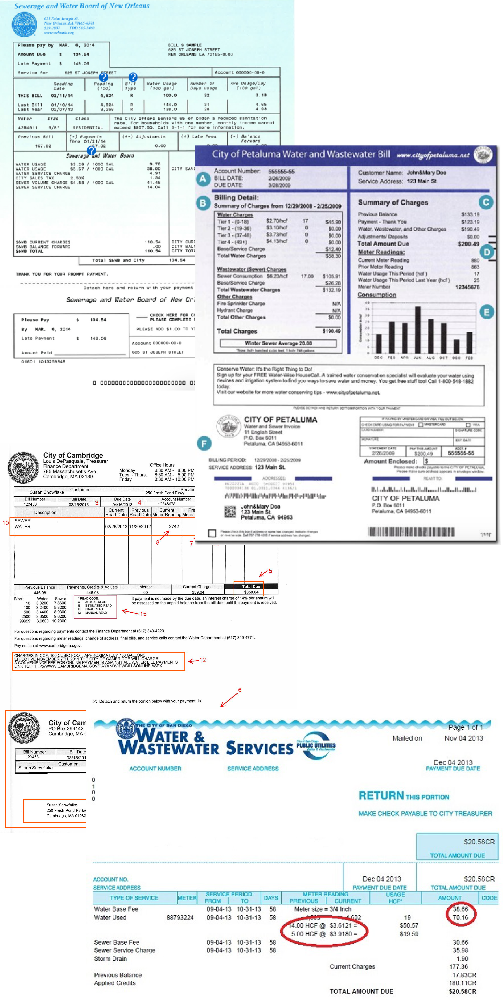
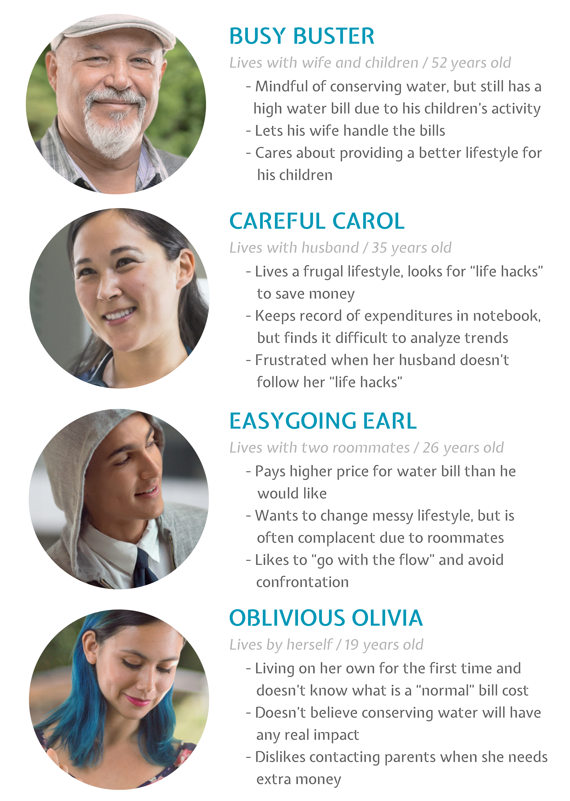

The Smart Water Bill is a redesign of an average household water bill for California residents. The improved bill is meant to encourage users to be more mindful of personal water conservation. Features of the redesign include infographics that show sources of water usage and floor maps that display hot spots where water is used the most.
-
Research
According to the 2016 U.S. Geological Survey, California residents use an average of 181 gallons every day. Compared to the average American, who uses 80 to 100 gallons every day, that is an extraordinary amount. In order to encourage Californians to be more mindful of their water usage, I sought out on improving today's water bill that would inform users to make smarter decisions in their households. I analyzed different types of water bills to explore their pain points. The main ones were:
- Lack of useful information. There is no way to tell where the water usage is coming from, and the only way to analyze water consumption patterns is through the monthly billing history chart - if the consumer even cares enough to stop and analyze it.
- Lack of visual hierarchy. The majority of the information displayed is heavy with text and has little vsual cues besides charts for monthly billing history. The sections often have equal visual weight to one another, making it difficult to determine where your eye should navigate around the page.
- Doesn't spark change. The main goal of today's water bill is just to communicate how much the customer is paying for their bill this month. While that fits the standard definition of what a bill should do, it has so much untapped potential to be more than that: to inspire, to educate, and to ignite change.
- 
- 
-
User Personas
Other research consisted of interviewing with users and collecting stories of water bill perplexity and confusion. These were the overall trends within the answers:
- Everyone immediately reads the total cost. If anything, that's the only thing they look at in the bill. The primary goal should be to convey clearly and quickly how much the user is paying their bill this month.
- Water usage consciousness was mixed. Based on interviews, people were either apathetic aout water usage, only caring about how much money they were paying this month, or they were mindful about saving water but had little information to go by on whether their methods were effective or not.
- It takes a while to understand the visuals. Users tend to glance at their monthly billing history because it is the only visual cue on their bill; however, they take little time analyzing it and would only put in the effort to do so if there was a large spike.
-
Solutions
Based on my research and user interviews, I conceptualized the Smart Water Bill with these key features:
- Water usage breakdown. Determine sources of water usage and connect to cost of the bill to link user interest.
- Neighborhood ranking. Users are pitted against their neighbors to compare water efficiency, encouraging friendly competition as incentive.
- Tips and past usage. Tips are generated based on the user's most used water source to give them suggestions for how to save money.
- Floor plan. Water usage is mapped out as hot spots in the household's floor plan.
-